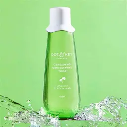
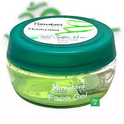

Cleanser/facewash
My suggestion
This is a first step of my daily routine
use a gentle
facewash/cleanser that suits for your skin type
- Toner
- It is the basic step of the makeup and it is used to prep the skin for following steps

Toner-picture
- To make the skin hydrated we need to use moisturizer

- Sunscreen
- Protect the skin from uv rays it is the foremost imp step in the routine